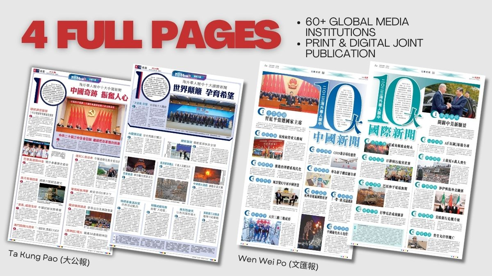
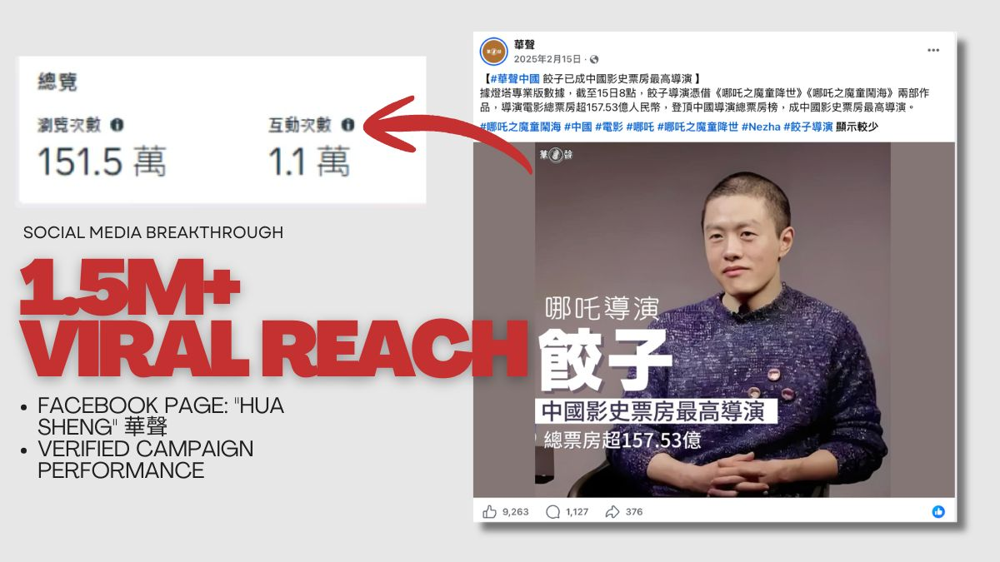

Selected work
Work 作品

Project Management
Revitalizing a Global Media Flagship 全球媒體盛典重啟
Spearheading a Cross-Border & Cross-Functional Campaign on a 15-Day Critical Timeline 15 天極限時程下的跨部門跨國大型票選專案統籌
+Situation & Task / 背景與挑戰
In 2023, our department revived our annual flagship event: "Top 10 Global News Selected by Overseas Chinese Media." This high-stakes initiative involved the Group's executive board, global media chiefs across 5 continents, and 5 distinct internal and external business units. The primary constraint was an extremely compressed 15-day timeline, requiring end-to-end execution from content curation and multi-tier executive approvals to global distribution, public voting, and multi-channel publication.
2023 年疫情後，部門決定重啟停辦多年的年度旗艦活動「海外華媒選十大新聞」。此專案涉及集團最高決策層、全球 5 大洲華文媒體高層、內部 5 個核心部門。最大的挑戰在於時程極度緊迫（僅有 15 天），期間必須完成內容產出、多級領導層層審批、全球發票與回收、以及橫跨兩大主流報紙與多網站的版面發布，不容許任何溝通滯滯。
Action / 策略與精華執行
1. Agile Project Management & Parallel Execution: Restructured the editorial team and implemented a non-linear workflow—initiating operational prep work concurrently with the executive approval loop to effectively neutralize timeline bottlenecks.
2. Risk Mitigation & Flexible Design: Anticipating year-end breaking news, I innovatively integrated "write-in custom fields" into the ballot matrix. This risk-managed design empowered media chiefs with editorial autonomy while future-proofing the campaign.
3. Cross-functional Matrix Orchestration: Coordinated complex alignments across disparate units, syncing with the overseas media network for VIP outreach, directing the tech center for public portal deployment, and securing high-priority print real estate from editor-in-chiefs.
1. 敏捷團隊架構與並行推進：作為總負責人，敏捷調度編輯部成員分工，並採取「非線性工作法」——在將初選內容呈報領導審批的同時，同步啟動下一階段的工作準備，大幅壓縮等待時間。
2. 彈性應變與風險管控：考慮到年底可能發生突發重大新聞，以及各國媒體主觀偏好的多樣性，創新地在標選票中加設「自填附加選項」，成功化解時效風險，爭取海外老總更高參與度。
3. 跨部門溝通與公關網絡：橫向協調多方資源，無縫聯動海外傳媒合作組織對接全球高層，並指導集團新媒體中心搭建投票網頁。建立高效的審核與反饋機制，確保資訊高速流轉。
Result / 數據與成果
Delivered an unprecedented success against insurmountable odds. Mobilized 60+ global media institutions across 5 continents to cast votes within 15 days (150% of the target KPI), alongside massive organic public turnout. The final results commanded 4 full-page spreads across the Group's two most prestigious flagship newspapers and dominated front-page features across multiple corporate digital networks, receiving glowing commendations from executive leadership.
極限挑戰成功，全面超越預期指標。在 15 天內成功吸引全球五大洲逾 60 家華文媒體機構共同參與投票（超額完成 150%），並引發大量大眾網友熱烈迴響。活動圓滿落幕後，成果在集團最主流的兩家核心報紙各斬獲 2 個整版（共 4 個全版）的重磅報導，並在集團旗下數個新聞門戶網站同步頂部發布，活動的超高效執行力獲得集團高層的高度讚賞。

Social Media Operations
From Zero to a Multi-Million Viral Account 從零到一的社群冷啟動
Social Media Growth Hacking: From Zero to a Multi-Million Viral Account for a Niche Editorial Brand 非主流新聞號的百萬爆款與增長策略
+Situation & Task / 背景與挑戰
Following a corporate mandate to establish social media channels, our secondary department faced a steep learning curve: we lacked organic traffic advantages and the team had zero prior experience. The KPI was to orchestrate a cold-start strategy, scaling the Facebook page to thousands of followers within 2 months and 10,000+ within six months to secure institutional visibility.
集團要求各編輯部門創立新聞社交媒體號。本部門非主流新聞核心，缺乏原生流量優勢，且團隊全員皆無社群營運經驗。我的目標是從零開始，帶領帳號在 2 個月內突破數千粉絲、半年破萬，在集團內部眾多強勢媒體號中突圍，打響部門名號。
Action / 策略與精華執行
1. Agile Growth Strategy: Capitalized on flexible content guidelines as a strategic advantage, initiating a "Growth First, News Second" framework to build a robust audience pool before seeking official corporate certification.
2. Viral Content Curation: Blended daily essential news with highly shareable soft content tailored to the overseas diaspora's psychological interests, such as giant pandas, pets, and cultural trending topics.
3. Hands-on Viral Content Creation: Executed end-to-end content development, successfully creating the page's first 100K-view and 1M-view viral posts, establishing a data-driven model for high-engagement content.
1. 迂迴引流策略：巧用非主流部門「管相對寬、內容靈活度高」的無形優勢。制定「先引流蓄水、後矩陣轉型」的策略，在帳號獲得官方正式定名前，打破傳統新聞限制。
2. 爆款內容矩陣：每日除基礎新聞外，引入海外華人用戶喜愛的「熊貓文化、萌寵情感、熱點話題」等高互動軟性內容。
3. 親自操盤百萬流量：獨立完成選題企劃與文案視覺優化，成功產出帳號首條突破 10 萬瀏覽量與首條突破 100 萬瀏覽量的現象級爆款貼文，摸索出高轉化的流量密碼。
Result / 數據與成果
Hyper-growth achieved, outperforming core corporate divisions. Scaled the Facebook page to 20,000+ premium followers within a year, significantly outstripping the growth rates of mainstream editorial teams. Multiple high-impact posts secured prestigious traffic and engagement awards from the Media Group, successfully elevating a fringe account into an internal corporate benchmark.
超額完成指標，社群效益驚人。該 Facebook 號在一年內成功斬獲 20,000+ 粉絲，增長速度與規模遠超集團內其他主流部門。多條高流量貼文因表現極其優異，多次榮獲集團內部頒發的流量大獎，成功將邊緣帳號打造成集團的社群標竿。
PR & Event Planning
Overseas Chinese Media Annual Summit 海外華文媒體年會
Custom Public Relations Strategy: Orchestrating an Award-Winning Sub-Forum on a Limited Budget 低預算下的精華公關與分會場逆戰
+Situation & Task / 背景與挑戰
During the Overseas Chinese Media Annual Summit involving 100+ top-tier media outlets, our secondary department faced severe constraints: an inferior venue, a fraction of the budget of major departments, and direct schedule conflicts with high-profile sub-forums. The objective was to outmaneuver resource limitations, secure the attendance of VIP clients, and elevate our brand equity within the global media network.
集團舉辦海外華文媒體年會，吸引逾百家媒體共襄盛舉。本部門作為二級部門，面臨場地狹小、預算遠低於主流部門的嚴峻限制，且會議時程與強勢部門高度衝突。我的任務是在資源極度匱乏的情況下，精確吸引核心客戶出席，並在海外媒體圈內樹立強烈的部門品牌形象。
Action / 策略與精華執行
1. VIP Psychological Insights: Engineered a high-touch engagement strategy tailored to media executives who prioritize social prestige and recognition.
2. Visual Marketing & Traffic Hijacking: Installed high-end, dynamic photo-op backdrops at the entrance, turning an unfavorable location into a viral visual hub that successfully diverted event traffic to our hall.
3. Honor Curation & Client Retention: Launched the "5/10-Year Strategic Partnership Milestone Awards" to embed deep emotional resonance into the agenda, guaranteeing the presence of key stakeholders.
1. 高階用戶洞察：深入分析參會媒體高層重視社交名聲與儀式感的心理，量身定制公關方案。
2. 視覺行銷與門戶截流：在會場門口精心規劃具備地標感、設計高級的視覺打卡物料，精準截過往流量，將劣勢場地轉化為熱門打卡點。
3. 情感歸屬與榮譽激勵：策劃頒發「5/10 週年戰略合作紀念獎盃」，將普通的商務會議升華為具有情感共鳴的榮譽盛典，成功鎖定重點客戶的出席意願。
Result / 數據與成果
Achieved a highly successful outcome despite resource constraints. Secured a 100% attendance rate from targeted VIP clients and naturally attracted a significant influx of prospective media executives via organic word-of-mouth. The high-ROI execution and inventive PR methodology earned special commendation from the Group's Executive Board, setting a benchmark for agile marketing.
以少勝多，逆勢突圍。不僅重點 VIP 客戶全數到齊，創新的視覺打卡更吸引了大量預期之外的初次見面媒體老總主動跨場參與。本次會議的公關創意與高效回報率（ROI），獲得了集團最高決策層的特別表揚，成功打響部門品牌。